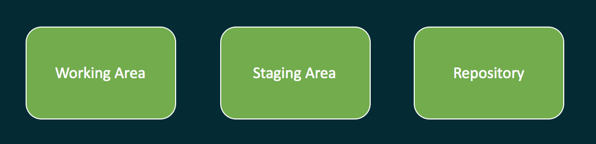
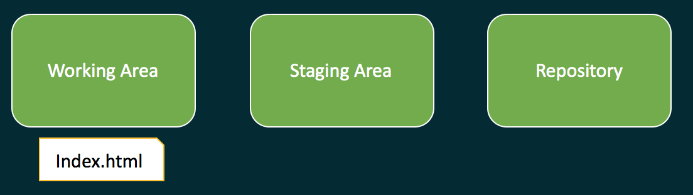
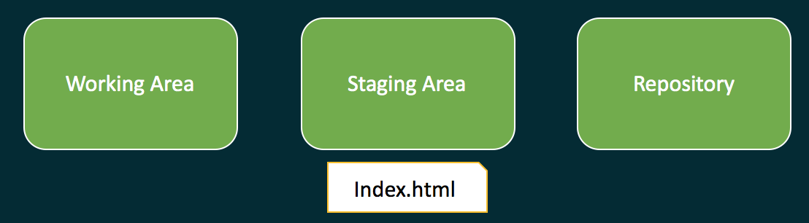
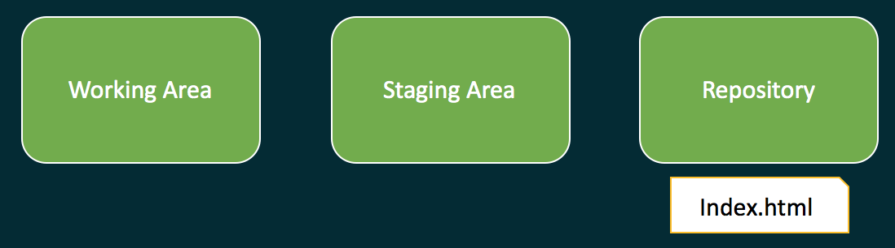
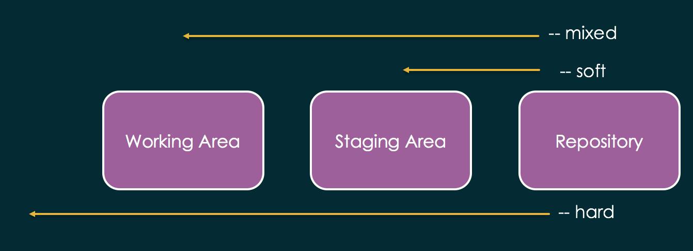
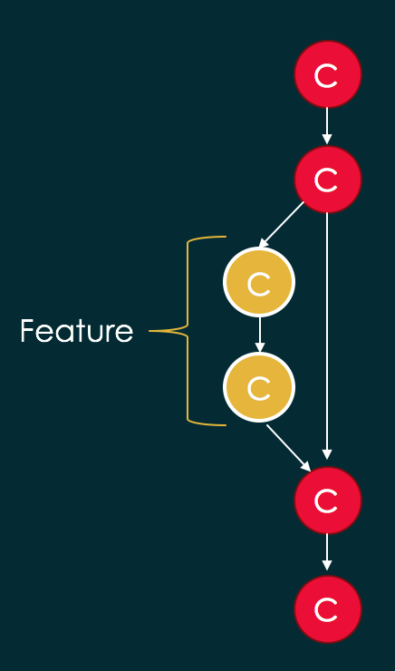
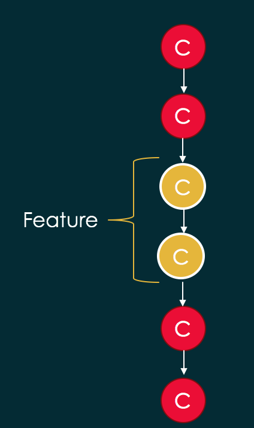

A gentle introduction to Git

firat atagun
How to navigate
- Use arrow keys to browse the slides
- CTRL+SHIFT+F to search
What is version control system?
A software desinged to track changes to set of files over the time. VCS provides ability to travel between states or versions your project.Before; files/folders were copied and pasted. Then folders were renamed to indicate the version of the project. That was the way to version control projects. But that was hard to manage, search, find changes and maintain.
Distribution Model
Local, Centralized, Distributed.History
RCS -> CVS -> SVN -> GitWhat is Git?
Git is a distributed version control system.In fact, git is a content addressable file system and a persistent map with a version control system developed on top it. It has been designed to work with or without a centralized server.
While CVS and SVN designed to track files, git was designed to track content.
Goals of Git
Fully distributed
Support non-linear development
Handle large projects efficiently.
Atomicity: Every operation is atomic.
Performance: It is very fast.
Security: Uses checksum and hashing for authenticity.
Installation
Download
Follow instructions
Configuration
Once setup is complete you can start configuring git.
Setting up user name and email
# git config --global user.name username
# git config --global user.email mailaddressIf --global option is left out configuration only applies to the specific repository.
Setting alias for Commands
# git config --global alias.aliasname commandname
For example:
# git config --global alias.st status
To view all the configuration options:
# git config --list
GUI Clients
There are several GUI clients. Some of are:
- SourceTree
- Github Desktop
- Git Kraken
- Smart git
Getting Started with Git
Initialize a repository
# git init
Add file(s) to it
# git add file.name
Commit
# git commit -m "your commit message"
Check Status
# git status
Break down of basic commands
There are 3 areas in Git namely working area, staging area and repository.
Working Area <-> Staging Area <-> Repository
Files basically move right and left between the areas.

# git init
Creates a repository of the working area. You will see ".git" folder in your working area. That is your local repository. There are bunch of folders and files in .git folder go manage your source code.

# git add index.html
Adds the file to staging area.

# git commit -m "my commit message"
Commits the file to the repository.
Renaming a file
Only a file in staging area can be renamed by Git. If the file is not tracked by repository, you need to renaming with OS capabilities.
# git mv inde.html index.html
# git commit -m "renaming"
Contents of a commit
To see contents of a commit:
# git show 4f62eae1b
If you like to see the parents of a commit you can use ^ (caret sign). If you like see the parent of a parent commit use two of them ^^.
# git show 4f62eae1b^
# git show 4f62eae1b^^
You can also use numbers.
# git show 4f62eae1b^2
Undoing changes
Reset, checkout, clean and revert commands are used to undo changes. They are very powerful but also destructive. They seem similar hence cause confusion which one to use.
Checking out file
You are working on a file in your working directory and haven't add it to index then, you want to undo all your changes, you can checkout the HEAD version by:
# git checkout filename
Reset
There is file and commit based reset.
Add a file from working directory to Index/Staging and if you like to undo and reset:
# git reset HEAD
Similarly following also removes an object from index. --cached also refers to staging area.
# git rm --cached index.html
Unstages changes, mode is --mixed:
# git reset HEAD
Moves the committed objects back to staging.
# git reset --soft HEAD^
Moves the commited object back to working directory.
# git reset --mixed HEAD^
Following moves HEAD to previous commit. Destroys everything.
# git reset --hard HEAD^
Reset moves HEAD between commits based on the option between staging, working directory or to garbage.
Git reset can work with any commit Id or Reflog Id
HEAD can be resetted to any reference
Git clean
Removing untracked files can be done with following command:
# git clean
Git revert
Reverts a commit:
# git revert bad6ct
Revert causes a new commit. You can revert any commit in the history. Use with caution!
Git log
# git log
Shows the history of repository and you can easily navigate through commits.
Git log can take several options and an alias can be created out of them.
Git log in one line
# git log --oneline
Git log with graph representation
# git log --graph
Git log shows reference information
# git log --decorate
Git log include branches and tags
# git log --branches --tags
Git log with several options
# git log --oneline --graph --decorate --branches --tags
You can create alias for it.
# git config --global alias.lol "log --oneline --graph --decorate --branches --tags"
To view the diff between branches:
# git log master..feature
Speaking of diff...
Git diff
Can be used to view the differences between commits. External programs can be bind to view it in a more visual way.
Diff between HEAD and one commit earlier
# git diff HEAD HEAD^
Diff between HEAD and two commit earlier
# git diff HEAD HEAD^^
Diff between any commits
# git diff 3e2b 28dd
Diff between branches
# git diff master develop
Branches
Branches are seperate commit history. They can be thought of sticky notes in your history.
To create a branch
# git checkout -b develop
To view branches
# git branch
To navigate between branches
# git checkout development
# git checkout feature1
To rename and delete.
# git branch -m development develop
# git branch -d feature1
Merging branches is as easy as:
# git merge develop
Git merge looks like:
Git merge rebase looks like:
Rebasing rewrites history. Helps working with a cleaner history.
Merging is more efficient in git.
- Merging is local
Cherry Picking
It is possible to cherry pick specific commits from different branches.
# git cherry-pick 4f62eae1
Cherry picks a commit from another branch.
-x writes to commit log that the specified commit has been cherry picked.
Stash
Stash is another area where files can be stored for a while.
Stash can be though of stack. It works with push and pop methods.
By default only tracked files can be stored in stash. Objects should be indexed first to be stashed.
Stash my current state
# vim index.html
# git add index.html
# git stash
index.html is now stashed. Additionally, current commit is checked out.
List of stashes can be seen.
# git stash list
# git stash list
Recovering from stash
# git stash pop
# git stash apply
Delete a stash
# git stash drop
Delete all stashes
# git stash clear
Working with Remotes
# git clone URL
# git push origin master
# git push origin branchname
# git pull
Git pull is same with:
# git fetch
# git merge